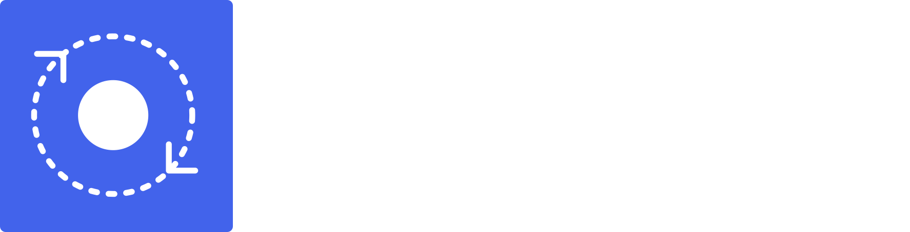

<!doctype html>
<html lang="pt-BR">
<head>
<meta charset="utf-8">
<title>ByOrbit carrossel</title>
<style>
@font-face{font-family:Geist;src:url(fonts/Geist-Regular.woff2) format("woff2");font-weight:400}
@font-face{font-family:Geist;src:url(fonts/Geist-Medium.woff2) format("woff2");font-weight:500}
@font-face{font-family:Geist;src:url(fonts/Geist-SemiBold.woff2) format("woff2");font-weight:600}
@font-face{font-family:"Geist Mono";src:url(fonts/GeistMono-Regular.woff2) format("woff2");font-weight:400}
:root{--bg:#09090B;--fg:#EDEDEF;--muted:#A1A1AA;--dim:#82828C;--blue:#4263EB;--lilac:#8DA2FF;--green:#3ECF8E;--line:rgba(255,255,255,.08);--m:96px}
*{box-sizing:border-box;margin:0;padding:0}
body{background:#000;font-family:Geist,sans-serif;-webkit-font-smoothing:antialiased}
.slide{position:relative;width:1080px;height:1440px;background:var(--bg);overflow:hidden;color:var(--fg)}
.slide::before{content:"";position:absolute;inset:0;background-image:linear-gradient(var(--line) 1px,transparent 1px),linear-gradient(90deg,var(--line) 1px,transparent 1px);background-size:120px 120px;background-position:-24px -24px;opacity:.35;-webkit-mask-image:radial-gradient(120% 90% at 85% 10%,#000 0%,transparent 70%);mask-image:radial-gradient(120% 90% at 85% 10%,#000 0%,transparent 70%)}
.orbit{position:absolute;inset:0;pointer-events:none}
.head,.foot{position:absolute;left:var(--m);right:var(--m);display:flex;align-items:center;justify-content:space-between}
.head{top:84px;height:48px}
.head img{height:44px;display:block}
.count,.url{font-family:"Geist Mono",monospace;font-size:24px;color:var(--dim);letter-spacing:.02em}
.count b{color:var(--fg);font-weight:400}
.foot{bottom:84px;padding-top:28px;border-top:1px solid var(--line)}
.swipe{display:flex;align-items:center;gap:14px;font-size:26px;color:var(--muted);font-weight:500}
.body{position:absolute;left:var(--m);right:var(--m);bottom:236px}
.body.top{top:300px;bottom:auto}
h1,h2{font-weight:600;letter-spacing:-0.035em;text-wrap:balance}
h1{font-size:112px;line-height:1}
h2{font-size:84px;line-height:1.04}
.q{font-size:76px;line-height:1.06;max-width:880px}
.blue{color:var(--blue)}
p{font-size:40px;line-height:1.42;color:var(--muted);max-width:820px;text-wrap:pretty}
.sub{margin-top:44px}
.num{font-size:210px;font-weight:600;line-height:.82;letter-spacing:-0.05em;color:var(--blue);margin-bottom:56px;font-variant-numeric:tabular-nums}
.num.year{font-size:180px}
.rule{width:96px;height:2px;background:var(--blue);margin:48px 0 44px}
.checks{list-style:none;margin-top:52px;display:grid;gap:26px}
.checks li{display:flex;align-items:center;gap:22px;font-size:38px;color:var(--fg);font-weight:500;letter-spacing:-0.01em}
.checks svg{flex:none}
.cta{margin-top:56px;display:flex;align-items:center;gap:18px;font-size:36px;font-weight:600;color:var(--blue);letter-spacing:-0.02em}
.biglogo{position:absolute;left:var(--m);bottom:236px;height:92px}
</style>
</head>
<body>
<div id="root"></div>
<script>
/*
  POST = { slides: [ ... ] }  — tipos de slide:
  {type:"cover",  title, sub}                 title aceita <span class="blue">…</span>
  {type:"text",   title, body}                contexto / narrativa
  {type:"item",   num, title, body}           num: "01".."05" ou um ano ("1999")
  {type:"turn",   title, sub, checks:[…3]}    a virada ByOrbit
  {type:"cta",    title, body}                último slide
*/
const arrow=(c,s=34)=>`<svg width="${s}" height="${s}" viewBox="0 0 24 24" fill="none" stroke="${c}" stroke-width="2" stroke-linecap="round" stroke-linejoin="round"><path d="M5 12h14M13 6l6 6-6 6"/></svg>`;
const check=`<svg width="40" height="40" viewBox="0 0 24 24" fill="none" stroke="#3ECF8E" stroke-width="2.2" stroke-linecap="round" stroke-linejoin="round"><path d="M5 12.5l4.5 4.5L19 7.5"/></svg>`;
function orbit(i,N){const cx=1250,cy=330,r=560,a0=205,a1=118;const a=(a0+(a1-a0)*(N>1?i/(N-1):0))*Math.PI/180;const x=cx+r*Math.cos(a),y=cy+r*Math.sin(a);
return `<svg class="orbit" width="1080" height="1440" viewBox="0 0 1080 1440"><circle cx="${cx}" cy="${cy}" r="${r}" fill="none" stroke="#8DA2FF" stroke-opacity=".38" stroke-width="1.5"/><circle cx="${cx}" cy="${cy}" r="${r+150}" fill="none" stroke="#FFFFFF" stroke-opacity=".08" stroke-width="1" stroke-dasharray="2 10"/><circle cx="${cx}" cy="${cy}" r="${r-170}" fill="none" stroke="#FFFFFF" stroke-opacity=".06" stroke-width="1"/><circle cx="${x}" cy="${y}" r="26" fill="none" stroke="#8DA2FF" stroke-opacity=".35" stroke-width="1.5"/><circle cx="${x}" cy="${y}" r="11" fill="#8DA2FF"/></svg>`}
function inner(s){
  switch(s.type){
    case"cover":return `<h1>${s.title}</h1>${s.sub?`<p class="sub">${s.sub}</p>`:''}`;
    case"text":return `<h2>${s.title}</h2><div class="rule"></div><p>${s.body}</p>`;
    case"item":return `<div class="num${/^\d{4}$/.test(s.num)?' year':''}">${s.num}</div><h2 class="q">${s.title}</h2><div class="rule"></div><p>${s.body}</p>`;
    case"turn":return `<h2>${s.title}</h2>${s.sub?`<p class="sub">${s.sub}</p>`:''}<ul class="checks">${(s.checks||[]).map(c=>`<li>${check}${c}</li>`).join('')}</ul>`;
    case"cta":return `<h1>${s.title}</h1><p class="sub">${s.body}</p><div class="cta">Fale com a ByOrbit ${arrow('#4263EB',34)} link na bio</div>`;
  }
}
function build(post){
  const root=document.getElementById('root');root.innerHTML='';const N=post.slides.length;
  post.slides.forEach((s,i)=>{const n=String(i+1).padStart(2,'0');const cta=s.type==='cta';
    const el=document.createElement('section');el.className='slide';el.id='s'+(i+1);
    el.innerHTML=orbit(i,N)+`<div class="head">${cta?'<span></span>':''}<span class="count"><b>${n}</b> / ${String(N).padStart(2,'0')}</span></div>
      <div class="body${s.type==='item'?' top':''}" ${cta?'style="bottom:420px"':''}>${inner(s)}</div>
      ${cta?'':''}
      <div class="foot"><span class="url">byorbit.space</span>${i<N-1?`<span class="swipe">Deslize ${arrow('#A1A1AA',30)}</span>`:''}</div>`;
    root.appendChild(el);
    // keep the satellite off the copy: slide it along the orbit until it clears every text block
    const sats=el.querySelectorAll('.orbit circle'); const ring=sats[3], dot=sats[4];
    const blocks=[...el.querySelectorAll('.body h1,.body h2,.body p,.body .num,.body .checks,.body .cta')].map(b=>b.getBoundingClientRect());
    const base=el.getBoundingClientRect(); const cx=1250,cy=330,r=560;
    const hit=(x,y)=>blocks.some(b=>x+40>b.left-base.left&&x-40<b.right-base.left&&y+40>b.top-base.top&&y-40<b.bottom-base.top);
    const a0=205+(118-205)*(N>1?i/(N-1):0);
    for(const d of [0,-6,6,-12,12,-18,18,-24,24,-30,30,-36,36,-42,42]){const a=(a0+d)*Math.PI/180,x=cx+r*Math.cos(a),y=cy+r*Math.sin(a);
      if(x<1050&&y>40&&!hit(x,y)){ring.setAttribute('cx',x);ring.setAttribute('cy',y);dot.setAttribute('cx',x);dot.setAttribute('cy',y);break}}
  });
}
window.build=build;
</script>
</body>
</html>
